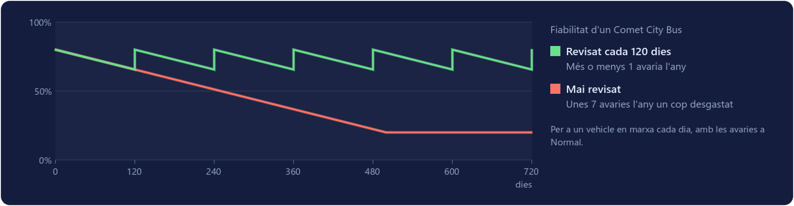

Dipòsits i revisions
D'on surten els vehicles i com es mantenen fiables.
Els autobusos, camions i trens nous surten d'un dipòsit. Hi tornen per a la revisió.
Dipòsits
- Tria Dipòsit de carretera a Carreteres o Dipòsit de trens a Ferrocarril i fes clic en terreny pla al costat de la carretera o la via. R en gira la porta.
- Un dipòsit de carretera costa 1.500 $ i un de trens 3.200 $.
- Un vehicle nou necessita un dipòsit connectat amb la primera parada. La finestra de compra diu quin falta.
- Els vaixells i els avions no en necessiten: apareixen al primer moll o aeroport.
Avaries i revisions
- Les avaries són una opció de la partida nova: Cap, Reduïdes, Normal.
- Cada vehicle té una fiabilitat que es desgasta dia a dia, més de pressa quan és vell.
- Un vehicle poc fiable s'avaria i es queda aturat d'un a tres dies. Un tren que va darrere d'un d'avariat espera en un senyal o un encreuament; si no n'hi ha cap entre ells, hi xoca.
- Cada 120 dies un vehicle necessita una revisió. Després de la parada següent passa per un dels teus dipòsits que li vingui de camí, s'hi queda un dia i en surt tan fiable com nou.
- Només es fa servir un dipòsit a menys de 80 caselles del vehicle, de manera que construeix-ne un a cada ruta llarga.
- Els vaixells es revisen als molls i els avions als aeroports. Els avions no s'espatllen mai.
- Un llum ambre que parpelleja assenyala un vehicle espatllat. La seva finestra mostra la fiabilitat i l'última revisió.

